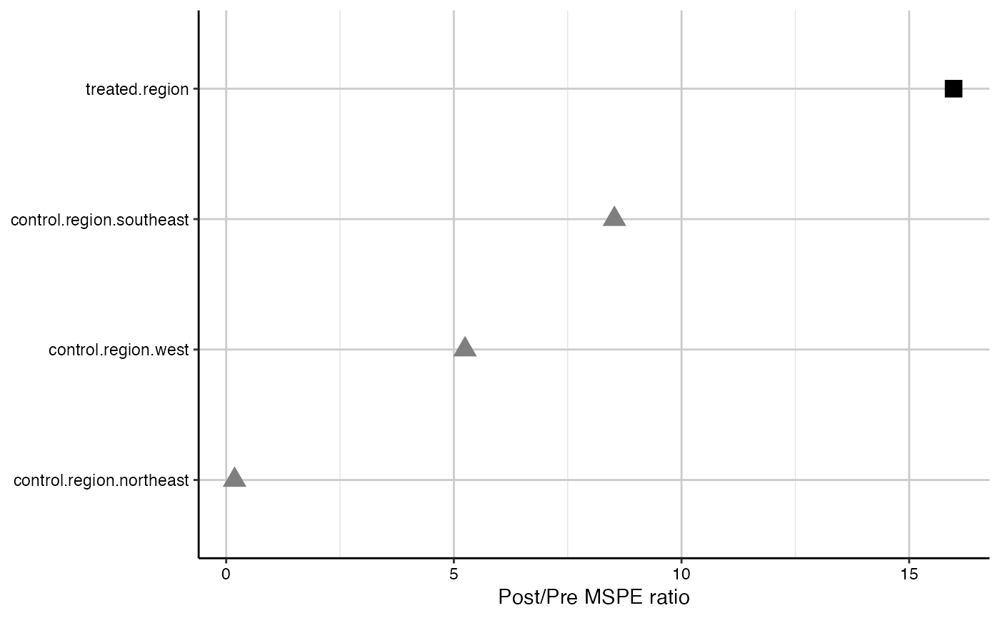

mspe.plot.RdPlots the post/pre-treatment mean square prediction error ratio for the treated unit and placebos.
mspe.plot(tdf, discard.extreme = FALSE, mspe.limit = 20, plot.hist = FALSE, title = NULL, xlab = "Post/Pre MSPE ratio", ylab = NULL) mspe_plot(tdf, discard.extreme = FALSE, mspe.limit = 20, plot.hist = FALSE, title = NULL, xlab = "Post/Pre MSPE ratio", ylab = NULL)
| tdf | An object constructed by |
|---|---|
| discard.extreme | Logical. Whether or not placebos with high pre-treatement MSPE should be excluded from the plot. |
| mspe.limit | Numerical. Used if |
| plot.hist | Logical. If |
| title | Character. Optional. Title of the plot. |
| xlab | Character. Optional. Label of the x axis. |
| ylab | Character. Optional. Label of the y axis. |
Post/pre-treatement mean square prediction error ratio is the difference between the observed outcome of a unit and its synthetic control, before and after treatement. A higher ratio means a small pretreatment prediction error (a good synthetic control), and a high post-treatment MSPE, meaning a large difference between the unit and its synthetic control after the intervention. By calculating this ratio for all placebos, the test can be interpreted as looking at how likely the result obtained for a single treated case with a synthetic control analysis could have occurred by chance given no treatement. For more detailed description, see Abadie, Diamond, and Hainmueller (2011, 2014).
Abadie, A., Diamond, A., Hainmueller, J. (2014). Comparative Politics and the Synthetic Control Method. American Journal of Political Science Forthcoming 2014.
Synthetic : An R Package for Synthetic Control Methods in Comparative Case Studies. Journal of Statistical Software 42 (13) 1–17.
Abadie, A., Diamond, A., Hainmueller, J. (2011). Synth: An R Package for Synthetic Control Methods in Comparative Case Studies. Journal of Statistical Software 42 (13) 1–17.
Abadie A, Diamond A, Hainmueller J (2010). Synthetic Control Methods for Comparative Case Studies: Estimating the Effect of California's Tobacco Control Program. Journal of the American Statistical Association 105 (490) 493–505.
library(Synth) # Load the simulated data data(synth.data) # Execute dataprep to produce the necessary matrices for 'Synth' dataprep.out<- dataprep( foo = synth.data, predictors = c("X1", "X2", "X3"), predictors.op = "mean", dependent = "Y", unit.variable = "unit.num", time.variable = "year", special.predictors = list( list("Y", 1991, "mean"), list("Y", 1985, "mean"), list("Y", 1980, "mean") ), treatment.identifier = 7, controls.identifier = c(29, 2, 13, 17), time.predictors.prior = c(1984:1989), time.optimize.ssr = c(1984:1990), unit.names.variable = "name", time.plot = 1984:1996 ) # run the synth command to create the synthetic control synth.out <- synth(dataprep.out)#> #> X1, X0, Z1, Z0 all come directly from dataprep object. #> #> #> **************** #> searching for synthetic control unit #> #> #> **************** #> **************** #> **************** #> #> MSPE (LOSS V): 11.69471 #> #> solution.v: #> 0.03083419 0.008788295 0.439072 0.3008163 0.1845091 0.03598008 #> #> solution.w: #> 0.01647626 0.1397253 0.6151521 0.2286464 #>## run the generate.placebos command to reassign treatment status ## to each unit listed as control, one at a time, and generate their ## synthetic versions. Sigf.ipop = 2 for faster computing time. ## Increase to the default of 5 for better estimates. tdf <- generate.placebos(dataprep.out,synth.out, Sigf.ipop = 2, strategy='multiprocess')#> #> X1, X0, Z1, Z0 all come directly from dataprep object. #> #> #> **************** #> searching for synthetic control unit #> #> #> **************** #> **************** #> **************** #> #> MSPE (LOSS V): 8.05617 #> #> solution.v: #> 0.004292489 0.1380736 0.00582828 0.07443277 0.2806333 0.4967396 #> #> solution.w: #> 0.1225372 0.636979 0.2404719 #> #> #> X1, X0, Z1, Z0 all come directly from dataprep object. #> #> #> **************** #> searching for synthetic control unit #> #> #> **************** #> **************** #> **************** #> #> MSPE (LOSS V): 2918.111 #> #> solution.v: #> 0.2902882 7.887e-07 4.054e-07 0.0002118806 0.4672674 0.2422313 #> #> solution.w: #> 0.2922553 0.05078967 0.6569231 #> #> #> X1, X0, Z1, Z0 all come directly from dataprep object. #> #> #> **************** #> searching for synthetic control unit #> #> #> **************** #> **************** #> **************** #> #> MSPE (LOSS V): 127.0044 #> #> solution.v: #> 1e-10 0.3503472 9.4e-09 0.6496528 8e-10 1.2e-09 #> #> solution.w: #> 0.9729072 0.001422063 0.02567068 #> #> #> X1, X0, Z1, Z0 all come directly from dataprep object. #> #> #> **************** #> searching for synthetic control unit #> #> #> **************** #> **************** #> **************** #> #> MSPE (LOSS V): 89.6011 #> #> solution.v: #> 0.007225619 3.38944e-05 0.1380941 0.1733409 0.2607464 0.420559 #> #> solution.w: #> 0.2824798 0.1968938 0.5205952 #>## Test how extreme was the observed treatment effect given the placebos: ratio <- mspe.test(tdf) ratio$p.val#> [1] 0.2mspe.plot(tdf, discard.extreme = FALSE)